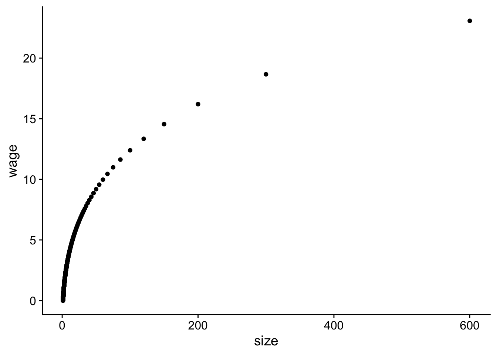
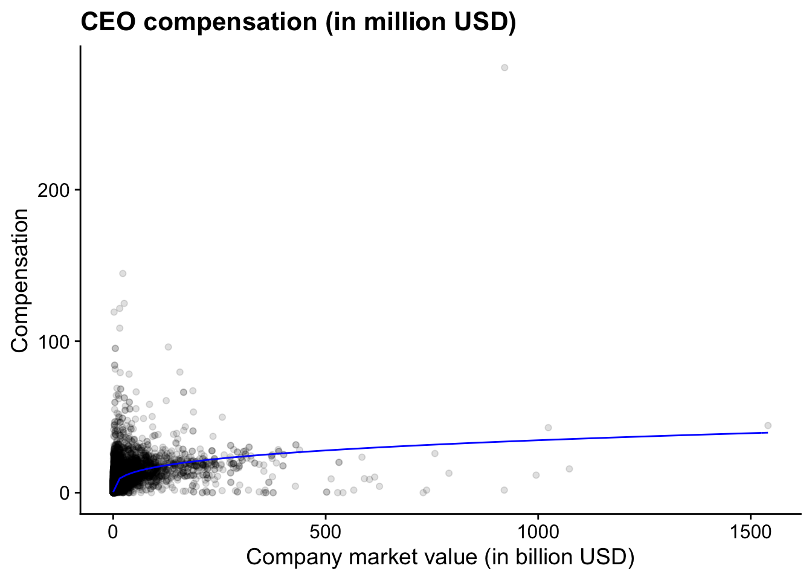
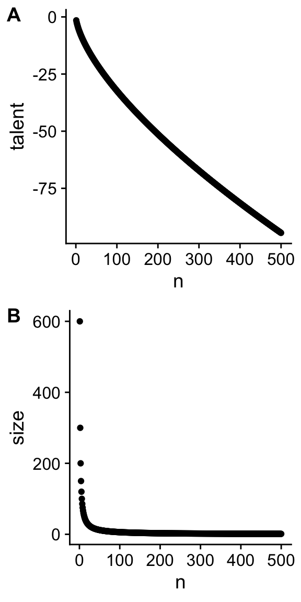
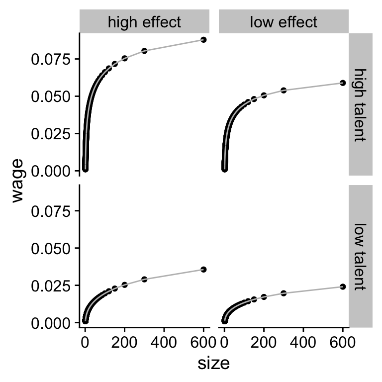

A good research project relies on strong theoretical foundation. Theories are a summary of prior research findings and present predictions you can test. In accounting and finance, a lot of theories are mathematical theories. Sometimes, research articles will give a good explanation of the arguments in a theory but sometimes you will have to put in some extra effort to understand the theory. In this section, I will give you two techniques that can help to understand the theory better. The first is making the theory simpler and less general and redo the derivations. The second is to simulate data based on the theory and to visualise the theory with plots. Computers are very good at doing calculations. Whenever possible, you should let computers do the work for you. Simulate and visualise is a technique, we will use a lot more in the rest of the notes.
Let us introduce a new theory how the size of the company is related to the compensation of the CEO. In Chapter 2 I presented a basic model where talented CEOs hire more people and attract more capital and thus grow the company. This theory ignored that companies and CEOs can choose to work with each other. In this section, we introduce a new theory about matching firms and CEOs (Edmans and Gabaix 2016; Tervio 2008).
The theory assumes that the increase in \(V\)alue of a firm from time \(0\) to time \(1\) is given by the following equation.
The increase in value depends on the \(T\)alent of the CEO, the inital \(V\)alue of the firm, and a scaling factor \(C\).30 The scaling factor is not crucial to the theory. If performance is measured in millions of dollars or in billions of dollars, the scaling factor will differ but that is not telling us anything about the economic mechanism. \(n\) is the rank of the size of the firm and \(m\) is the rank of the talent of the CEO. \(n = 1\) is the largest firm, \(m = 1\) is the most talented CEO. The question the theory is trying to answer which CEO, \(m\), is going to work for firm, \(n\).
The theory assumes that firms will make a decision about which CEO to hire and CEOs will only accept to work for a firm if they cannot do better in another firm. The firms have to compensate a manager with a \(w\)age and will maximise the residual value of the firm, \(V_1(n) - V_0(n) - w(m)\). The model assumes that the managers will need a compensation above \(w_0\).
Tervio (2008) and Edmans and Gabaix (2016) show that when \(m = n\), no firm or CEO can improve themselves by switching. This means that the most talented CEO works for the largest firm, the second most talented CEO works for the second largest firm, until we reach the least talented CEO and the smallest firm. The intuition is that CEOs have a larger impact in larger firms.31 If a CEO is good at managing people, the impact of the CEO will be better if they are managing more people. Therefor, most value is created when the largest firms are managed by the best CEOs. The difficulty is to determine how much each firm should pay the CEO. I first go over a simplified mathematical model that gets some of the intuition across, then I explain how you can simulate from the more complicated model
Let us assume that there are only three CEOs and only three firms. In equilibrium, we want to make sure that the largest firm (\(n=1\)) cannot do better than hiring the most talented CEO (\(m=1\)). In other words, the performance of the most talented CEO after paying their compensation, should be higher than the residual performance of the other two CEOs.
Next, the second largest firm has to be better off hiring the the second best CEO.
If we add the first condition of (5.2) to condition (5.3). We can rewrite everything and get the second condition of (5.3).
\[\begin{align*} CV_0(1) T(1) - w(1) + CV_0(2) T(2) - {\color{blue}{w(2)}} \geq CV_0(1) T(2) - {\color{blue}{w(2)}} + CV_0(2) T(3) - w(3) \\ CV_0(1) T(1) - w(1) \geq C(V_0(1) - V_0(2))T(2) + C(V_0(2) - {\color{blue}{V_0(1)}})T(3) + {\color{blue}{CV_0(1)T(3)}}- w(3) \\ CV_0(1) T(1) - w(1) \geq {\color{blue} {C(V_0(1) - V_0(2))(T(2) - T(3))}} + CV_0(1)T(3) - w(3) \end{align*}\]
Because \(V_0(1) > V_0(2)\) and \(T_0(2) > T_0(3)\), we can delete the first term on the right hand side. So, the two inequalities give us the third inequality from the previous slide for free.
Because firms will prefer to paying a lower compensation than more compensation, firms pay their CEO just enough so that smaller firms are not willing to pay the same amount of money to poach the CEO away. For each firm, we have to make sure that the advantage of having a more talented CEO is smaller than the extra wage of hiring the CEO.
\[\begin{align*} CV_0(2) (T(1) - T(2)) \geq w(1) - w(2) \\ CV_0(3) (T(2) - T(3)) \geq w(2) - w(3) \end{align*}\]
Because firm \(n=1\) and \(2\) will set the wage just high enough to make sure that a smaller firm does not poach their CEO, they will set the compensation \(w(1)\) and \(w(2)\) just high enough but not higher. We can simplify the resulting conditions than to equalities.
The deriviations are a bit tedious and I do not necessarily want you to be able to do this entirely on your own. However, it shows that with some small calculations and with some economic intuition about what we want to calculate, we can again derive the relation between firm value and CEO compensation.
If the literature points you to a mathematical model and you want to understand it better. Breaking it down to a simpler model with only 2 or 3 firms can be very illuminating. I hope the three firm model helped you to get some of the intuition behind the model without resorting to too complicated maths. It is relatively easy to see that we can write the inequalities in (5.4) in a more general form.
The basic idea is that a larger firm will pay more for a CEO than a smaller firm. If the larger firm wants to make sure that a the more talented CEO works for them, they need to pay the CEO a high enough wage. The difference between the two wages for a talented CEO will be the surplus that the CEO would create in the smaller firm. So the smaller firm will not be willing to poach the more talented CEO because the costs (higher wage) would outweight the benefit (higher surplus).
The original papers go further with the derivations
(Edmans and Gabaix 2016; Tervio 2008). However,
this is an algorithm we can give to R when we add some further
assumptions. So instead of going over all the math, we are going
to simulate wages and firm values based on the algorithm.
The original theoretical papers also need the extra
assumptions. The goal of the simulation is to show that
sometimes you do not need all the fancy maths when you can write a
computer program to do the work for you. We will use similar
assumptions as the original papers but implement them in an R
program.
First, let us load the tidyverse package.
library(tidyverse)Next, we simulate data for obs=500 observations. size_rate
is a parameter that controls the size of firms. A value of 1
means that firms have constant returns to size, the same
assumption as in Chapter 2. talent_rate
is something similar for the Talent of the CEOs. A larger number
for both rate parameters implies that differences between sizes
or CEOs become larger at the top. C is the \(C\) constant in the
model. scale is an additional parameter that helps me scale the
size of the firms so that I get similar numbers as the real data.32 This is not necessarily a fudge. The theory does not say
anything about whether we should measure firm size in USD, in AUD
or in CNY. So the scale we use is arbitrary. w0 is the base
wage for the least talented CEO.
obs <- 500
size_rate <- 1; talent_rate <- 2/3;
C <- 10; scale <- 600; w0 <- 0;
n <- c(1:obs)
size <- scale * n ^ (-size_rate)
talent <- - 1/talent_rate * n ^ (talent_rate)n is an R vector of length obs (i.e. 500) with values from
1 to obs. So it is the rank in size and talent for each firm
and CEO. You can see what n look like by just typing n and
enter in the R console.
Size and talent follow an exponential distribution which has some theoretical motivation given in Tervio (2008) and Edmans and Gabaix (2016). If that interests you, please go have a look but it goes beyond what we need today. What we do is give a value for the size of each firm from 1 to 500 and for the talent of each CEO from 1 to 500.
We can also calculate the wage of each CEO-firm combination from
equation (5.5). We start by creating
a wage vector with 500 NA values.33 The rep function creates a vector of obs repititions of
NA
At the last (obs = 500) position of the vector, we set the wage
equal to w0 for the least talented CEO and the smallest firm.
Than for each firm (we go from i = 499 to i = 1), we set the
wage as the wage of the smaller firm (i + 1) and subtract the
surplus our CEO would generate in the smaller firm over what
their CEO is now generating.34 Again scale and C just scale
some of the values so that they are easier to interpret. These
parameters are less important for the economic intuition.
wage <- rep(NA, obs)
wage[obs] <- w0
for (i in (obs - 1):1){
wage[i] <- wage[i + 1] + 1/scale * C * size[i + 1] *
(talent[i] - talent[i + 1])
}Now we can put all our variables in a dataset. The tidyverse
calls datasets tibbles and they are the main object that
tidyverse functions work on.
simulated_data <- tibble(
n = n,
size = size,
talent = talent,
wage = wage
) With the data we simulated, we can visualise the theory and see whether our theory matches our intuition. Visulising a theory is one way to understand the assumptions and to check whether it matches the data. Even if you do not have your data yet, it will give you an idea of what the data should look like.
Figure 5.1 shows the relation between the
simulated CEO wage and simulated firm size. It’s not
perfect but the plot does follow a similar non-linear pattern as
what we found in Chapter 2 (see Figure
5.2).35 qplot is a funtion to make quick plots and it is part of the
ggplot package which is part of the tidyverse.
Figure 5.1: Relation between simulated CEO wage and firm size.
qplot(data = simulated_data, y = wage, x = size)Figure 5.2: (ref:us-comp-value-plot)
print(plot_comp_value)To better understand the assumptions in the theory, we can also plot how talent and size change as a function of the rank of respectively the CEO and the firm. I glossed over the details before but that does not mean that we cannot check whether those functions make sense.
Figure 5.3 shows us which assumptions were
necessary for the theory to work. We see that the difference in
talent at the top of the distribution (n = 1) is not that
large, the difference in firm sizes is much more pronounced and
is driving the difference in wages according to this theory.
Figure 5.3: Relation between talent and rank of CEO (A) and between size and rank of the firm (B).
p_talent <- qplot(data = simulated_data, y = talent, x = n)
p_size <- qplot(data = simulated_data, y = size, x = n)
cowplot::plot_grid(p_talent, p_size, ncol = 1, labels = "AUTO")In the code, I use a function from the cowplot package to plot
different plots (p_talent and p_size) in 1 column. The
automatic labels will add the A and B labels for the plots.
R
One of the most valuable aspects of R is that you can write
new functions. Functions allow you to create your own verbs to
apply to objects. In the previous section, we simulated data with
a number of parameters in the theory set at a fixed value. If we
want to compare the sensitivity of the theory to changes in the
parameters, we want to simulate new datasets with different
parameter values. A function to simulate data is what we need.
Functions are created with the function function. In between
brackets, you define the parameter you want to use in your
functions and their default values. In between the curly braces
{} you tell R what it should do with those parameters.
Ideally, you should not rely on any parameter or data that is not
defined in your function. R has some liberal defaults which
might give you unexpected results if you do that. You can rely on
external functions like I do to create the tibble.
I do nothing in the function that I have not done before. The
only addition is that at the end, the function returns the
simulated data. You can then use the function to create a new
simulated dataset.36 I call the function create_fake_data because I want to
emphasise that there is nothing special about simulated data.
Some people prefer more dignified names. If you prefer that, you
can use any other name for the function. Just make sure that it
is clear what your function is doing.
create_fake_data <- function(obs = 500, size_rate = 1,
talent_rate = 1,
w0 = .001, C = 1){
scale = 600
n = 1:obs
size = scale * n ^ (-size_rate)
talent = -1/talent_rate * n ^ talent_rate
wage = rep(NA, obs)
wage[obs] = w0
for (i in (obs - 1):1){
wage[i] = wage[i + 1] + 1/scale * C * size[i + 1] *
(talent[i] - talent[i + 1])
}
fake_data = dplyr::tibble(n = n, size = size, talent = talent,
wage = wage)
return(fake_data)
}
fake_data <- create_fake_data(talent_rate = 2/3, C = 0.01)We can create new datasets where the talent_rate is increased to 1 (high talent) and the effect of CEOs on the surplus is increased to .015 instead of .10. I choose .10 in this simulation instead of 10 so that all values can be interpreted in billion USD to mimic the real data. Again, that is a rather arbitrary scaling issue.
data1 <- create_fake_data(obs = 500, talent_rate = 2/3, C = .01) %>%
mutate(talent_rate = "low talent", C = "low effect")
data2 <- create_fake_data(obs = 500, talent_rate = 1, C = .01) %>%
mutate(talent_rate = "high talent", C = "low effect")
data3 <- create_fake_data(obs = 500, talent_rate = 2/3, C = .015) %>%
mutate(talent_rate = "low talent", C = "high effect")
data4 <- create_fake_data(obs = 500, talent_rate = 1, C = .015) %>%
mutate(talent_rate = "high talent", C = "high effect")
data_exp <- bind_rows(data1, data2, data3, data4)
data_exp## # A tibble: 2,000 × 6
## n size talent wage talent_rate C
## <int> <dbl> <dbl> <dbl> <chr> <chr>
## 1 1 600 -1.5 0.0241 low talent low effect
## 2 2 300 -2.38 0.0197 low talent low effect
## 3 3 200 -3.12 0.0172 low talent low effect
## 4 4 150 -3.78 0.0156 low talent low effect
## 5 5 120 -4.39 0.0143 low talent low effect
## 6 6 100 -4.95 0.0134 low talent low effect
## 7 7 85.7 -5.49 0.0126 low talent low effect
## 8 8 75 -6 0.0120 low talent low effect
## 9 9 66.7 -6.49 0.0114 low talent low effect
## 10 10 60 -6.96 0.0110 low talent low effect
## # … with 1,990 more rowsThe bind_rows function allows you to combine the four datasets
in one big dataset data_exp. This will help us to plot the data
in Figure 5.4 with the more complicated but
also more flexible ggplot function. In the function, we first
define the data we want to use. Within the aes() specification,
we define the variables that are going to be plotted. We tell
ggplot that we want the data to be plotted as the following
geometric elements a point and a line.37 Obviously, you do not
need both. This is just to show you what you can do. I make the line
colour grey. The facet_grid creates different subplots depending on
whether an observation has a different value for the talent_rate
variable and the C variable.
Figure 5.4: (ref:sim-combined)
plot_exp <- ggplot(data_exp, aes(x = size, y = wage)) +
geom_point() +
geom_line(colour = "gray") +
facet_grid(talent_rate ~ C)
print(plot_exp)It looks like our theory is much more sensitive to changes in the talent rate than in changes to the scaling effect.
In these notes, I will come back to the idea of simulation over and over. For three big reasons:
Simulating data from a theory and visualising the theory helps you sharpen your intuition for your theory and for which values are reasonable and which ones are not. If you know upfront which values are not reasonable that will help you to interpret your findings in your statistical analysis. If you estimate parameters in your model that are too big or too small, it might be an indication that something went wrong with your analysis.
When you simulate data you can simulate variables that you cannot observe (e.g. CEO talent). Sometimes these variables need to be included in your statistical analysis to get unbiased parameter estimates. With simulated datasets, you can run the analysis with and without the unobservable variables to investigate the impact of including and excluding the variable.
If there are different statistical tests you can use to investigate your research question, you do not want to test the different tests on your real data. If you pick the statistical test that gives you the “right” answer, you are likely to delude yourself. The right way to compare different statistical tests is to see whether they can estimate parameters in simulated data where you know what the right value of the parameter is.
In short, the advantage of being able to generete simulated data is that it sharpens your understanding of your theory and of your statistical test.
Page built: 2022-02-01 using R version 4.1.2 (2021-11-01)